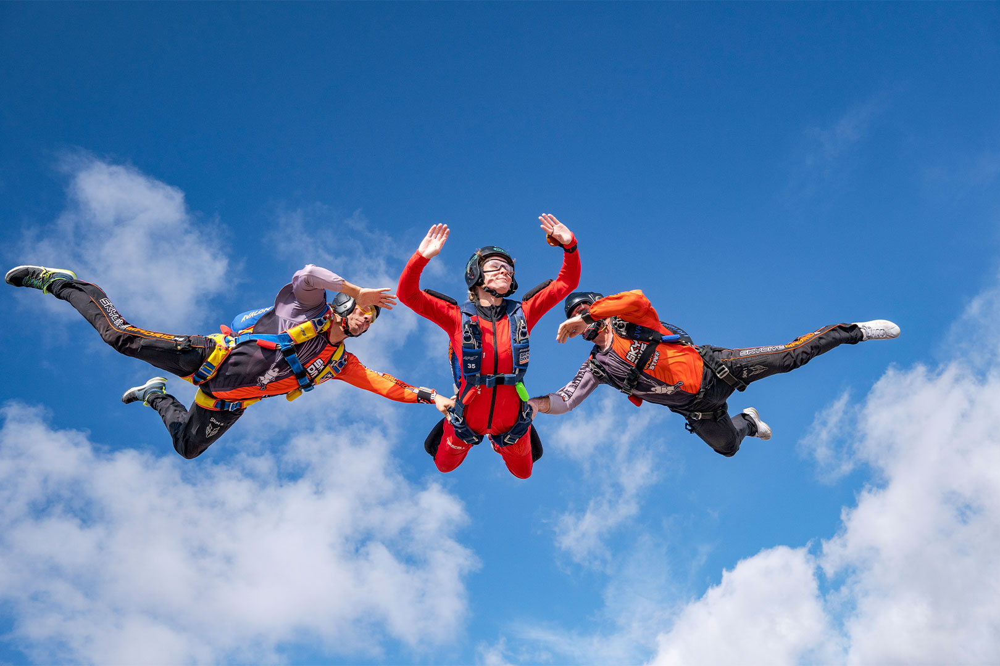

AFF - Accelerated FreeFall

Start your journey of human flight with AFF(accelerated freefall)
You could being doing your first solo skydive with a little as 8 jumps and
become a qualified skydiver within 18 completed freefalls!
AFF consists of two highly experienced instructors jumping out the plane
with you on your first few jumps. They are there to control your body and
instruct you in the air how to "fly" correctly. As you progress through
your course passing the required levels you will only require one
instructor, until eventually you have show the competence to do it all
yourself
AFF Requirements
- Self-confidence
- Patience
- Persistence
- Courage
- (no previous experience required)
AFF course details
- 1 x full day ground school
- [Crucial part of your intro to skydiving, throughout the day an instructor will guide you through everything from thr ground up, saftey protocol and procedures, equipment, how to exit the plane, how to fly your body, hands signals in the sky(as you cant speak to each other like n the movies..) progression through the course, canopy control and all the most neccessary information to ensure the best introduction to skydiving, your own safety and others]
- (7) x skydives with instructors
-
First (3) x skydive with two instructors
- Remaining 4 x skydive with one instructor
- (1) x skydive [solo] from a lower altitude (usually 6000 - 8000ft)
-
This is monitored by your instructor from the plane, you are required to have pulled your pilot chute within 10sec
- (10) x solo skydives, called 'Consoles'
-
This is where you will be offically skydiving SOLO, althouhg youre not qualifed yet and closely monitored on the ground and in the plane by an instructor, once in the air your are completely alone! Once you have completely your 10 x consoles without issues you can be signed off to be a Qualifed skydiver!
-
During your consoles your are expected to practise everything learnt during your intial phase of your course as if an instructor was there with you.
- Altitude checks
- Front/back loops(flips)
- Tracking
- Correct opening heights
- etc.